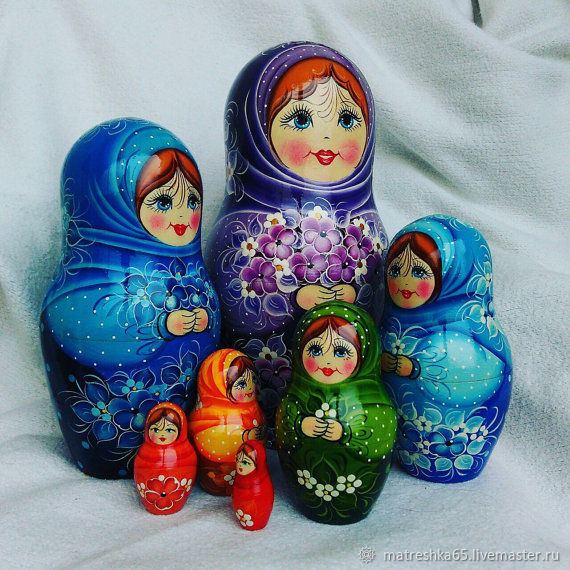
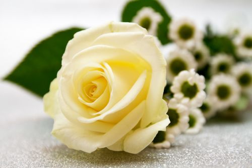
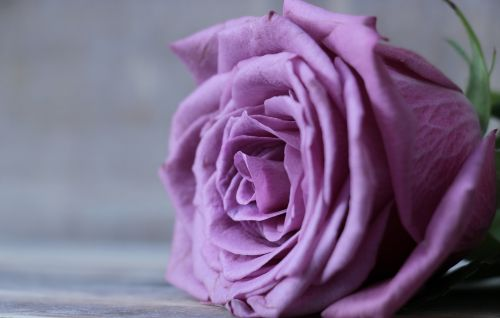
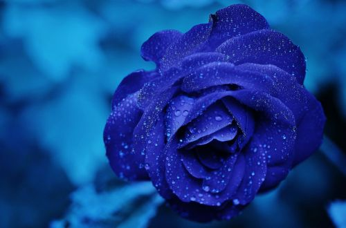

СТАТЬЯ О СЕБЕ
Доброго времени суток всем читателям моей скромной первой страницы
Мой учитель дал мне
задание найти информацию в любом журнале или книге, но я решил составить список из 6 тем, связанных со
мной. Ниже имеется несколько пунктов, нажатие на которых приведет вас к соответствующей
теме.
Я
надеюсь тебе это понравится.
About
Меня зовут Стив Уильямс Паукар Мендоса, как вы, мои читатели, уже наверняка заметили в основном
заголовке.
С самого раннего возраста я всегда мечтал поехать в Россию. Все благодаря тому, что, когда я
был маленьким, мы с мамой смотрели фильм, который называется «Мое имя Клоун», Фильм можно посмотреть онлайн здесь на
YouTube.
Все мои друзья смеялись надо мной, потому что я однажды сказал им, что полечу в Россию,
чтобы
учиться и говорить по-русски, но в то время это было почти невозможно, потому что это была другая страна,
другой континент, пересекающий Атлантический океан, другой язык, разные блюда и холодная погода.
Но
мои
родители доверяли мне, верили в меня и всегда говорили мне,что все возможно, так как слово «не могу»
не
существует и для невозможного потребуется просто немного больше времени.

И после школы очень молодым я начал свое приключение в
холодных
странах, потому что это была моя мечта. И моим родителям нужно было гораздо больше любви, чтобы позволить
мне
начать свою жизнь, чем оставаться с ними.
Country
Я из Перу, официально Республика Перу, это прекрасная страна,
расположенная на материке Южной
Америки.
С береговой линией он граничит с Тихим океаном, с Эквадором и Колумбией на
севере, с Бразилией на востоке и с Боливией и Чили на юго-востоке. Его территория состоит из разнообразных
ландшафтов: долины, плато и высокие вершины Анд простираются на запад в сторону пустынного побережья и на
восток в сторону Амазонки. Это одна из стран с самым большим биологическим разнообразием и крупнейшими
минеральными ресурсами в мире.
History
Вернемся на тот момент, где я рассказывал, почему решил поехать в Россию. После просмотра фильма я решил,
что
хочу выучить русский язык, который является одним из 5 самых сложных языков в мире.
Среди них
есть:
- Язык арабский
- Язык китайски
- Язык немецкий
- Язык русский
- Язык японский
И несмотря на то, что моя страна - тропическая страна с прекрасным климатом, свое приключение в Россию я начал очень молодым, когда мне было всего 17 лет. Свой большой жизненный опыт я получал, приехав поочередно в разные страны и города бывшего Советского Союза:
Cities
Ниже я расскажу немного о своей истории, опыте и приключении в каждой стране.
Беларусь - Минск

Минск – это было первое место, где я начал свою первую учебу, и первая страна бывшего Советского Союза, куда
я
прилетел.
Я впервые увидел людей со светлыми глазами. Они говорили на таком языке, которого я не знал и
который услышал в первый раз в фильме «Мое имя Клоун». Через 2 месяца после того, как прилетел в Минск, я
хотел
уже вернуться домой. Так как мне было тяжело. И вдвойне тяжело от того, что я был совсем один. Тогда я
поднял
глаза на небо и сказал Богу: «Дай мне сил и сотвори чудо, чтобы не сдаться». И в этот момент,
25
ноября 2003 года, около 20:00 после разговора с мамой через Windows Live Messenger в Минске пошел
снег.
Это был первый снег в моей жизни.
Для меня увидеть снег — это чудо, сотворенное Богом. И когда я
увидел,
что снег упал мне на ладонь, я сказал себе: «Бог слышит меня и всегда со мной». Я решил не сдаваться и
двигаться дальше.
Так началась моя жизнь в холодных странах, но с теплом в душе, зная, что Бог
всегда со мной.
УУ меня появилось много знакомых людей, вместе мы ходили на различные вечеринки. Тогда же начал работать. Но
я
чувствовал, что чего-то не хватает, и я не знал что, Позже Бог приготовил для меня другой путь – я переехал
в
Украину - Киев.
Украина - Киев

Бог послал меня в Украину, чтобы помочь родной сестре, поддержать ее, так как у нее родился сыночек, мой
племянник Хоакинчик.
Я считал его моим сыном, поскольку со мной он начал разговаривать и
впервые ходить.
Сначала это было сложно, я не был готов стать отцом так резко.
К тому же мне нужно было учиться,
работать
и помогать моей сестре растить нашего Хоакинчика.
У меня, как и у всех, есть недостатки.
Но мои родители всегда говорили, что сначала Бог, потом семья,
а
потом работа. И моя семья научила меня, что для своей семьи надо бороться каждый день, чтобы дать им все.
Позже сестра закончила учебу и вернулась в Перу с моим племянником Хоакинчиком.
Я снова остался один, мне нужно было закончить учебу.
Это было очень сложно, но мой друг Николай
всегда
поддерживал меня.
И у Бога был еще один сюрприз с огромным подарком для меня.
Именно в Украине я встретил свою
будущую жену.
Россия - Красноярск

Красноярск – это тот прекрасный город, который подарил мне самое драгоценное, что может получить любой
человек.
Это семья – жена и прекрасные дети, которых она мне подарила.
Познакомились с женой мы в Украине. Сама она родом с Красноярска, и я не знал где находится этот город.
Из-за схожести в названии для меня, я сначала думал, что это город Краснодар. И подумал, что не так уж
и
сложно туда переехать. Но мне было все равно куда ехать. Теперь было главным всегда находиться рядом со
своей
семьей, и я говорил себе, что готов поехать хоть в Сибирь.
И так все и вышло. Я приехал в Красноярск.
Так началась моя семейная жизнь. Ноувы я многое не замечал и не дал значение, и не мог дать своей семье все,
что было
необходимо.
В настоящее время они находятся далеко от меня уже три года.
Именно поэтому решил поступить на это
обучение по созданию сайтов, чтобы мог заработать больше денег и встретиться снова со своей семьей.
Contacts
Вы можете меня найти в следующих социальных сетях:
ЗНАЧЕНИЕ ЦВЕТОВ
Матрешка
Первоначально русская матрешка вмещала в себя семь фигурок. Этот факт тоже имеет объяснение. С давних времен принято считать, что наше тело содержит семь разнородных аур, как слияние нашей человеческой энергии с силой Бесконечности. И по традиции, одеяние каждой из семи, должно была быть окрашено в один из цветов радуги в строгой очередности, начиная с красного и заканчивая фиолетовым. В результате самая маленькая матрешка всегда была красной, а самая большая - фиолетовой. Именно так распределены цвета в нашем тонком теле и в пространстве.
Красный цвет, Оранжевый цвет, Желтый цвет, Зеленый цвет, Голубой цвет, Синий цвет, Фиолетовый цвет.
-
Красный цвет – самый первый, он означает физическое тело. Он олицетворяет силу, но вибраций его недостаточно, чтобы возвыситься до небес. В то же время он позволяет припасть к Матушке-Земле и напитаться ее живительной энергией. Если у человека опустошена энергия Земли, то у него наблюдается упадок сил и жизненной активности.
-
Оранжевый цвет приносит плодородие.
-
Желтый цвет означает здоровье и твердую жизненную позицию.
-
Зеленый придает душевные силы, развивает интуицию.
-
Голубой цвет усиливает коммуникативные навыки.
-
Синий – цвет высших способностей. Он может открыть вам дар предвидения и понимания законов Вселенной.
-
Фиолетовый цвет замыкает ауру. Он равномерно и гармонично распределяет энергии всех видов в организме.
И все же, прежде всего, матрешка – это символ материнства, семьи и плодородия. Даже само название говорит об этом, ведь слово «матрешка» произошло от имени Матрена, в основе же этого имени лежит слово «mater», с латинского оно переводится, как «мать».
Розы
Общее значения роз
Лепестки роз достаточно нежные и ценятся за свой неповторимый образ, поэтому в целом они символизируют любовь и красоту. С другой стороны, именно из-за шипов на стеблях они в меньшей степени символизируют защиту.
Красные розы, Белые розы, Желтые розы, Оранжевые розы, Розовые розы, Сиреневыые розы, Синие розы, Чёрные розы.
Красные розы

Красный цвет сам по себе олицетворяет любовь, страсть и эротизм, поэтому неудивительно, что красные розы их усиливают. Кроме того, они хорошо работают как средство соблазнения и указывают на симпатию, когда дарятся человеку с романтическим признанием.
Белые розы
Эти розы чаще всего используются в качестве детали при крещениях, причастиях и свадьбах. Белые розы, в основном, являются синонимами чистоты, мира и невинности. Они используются в качестве подарка, чтобы попросить искренних извинений или признаться в любви.
Жёлтые розы

Ассоциируются с солнцем, излучающим энергию, веселье, счастье и радость. Кроме того, желтые розы символизируют дружбу между людьми.
Оранжевые розы

Это еще один цвет, который выделяется больше, особенно когда говорим о розе. Цвет с тем же значением, как и предыдущая роза – веселье, энтузиазм и радость. Таким образом, они отлично подходят как дополнительный подарок из-за свой особенности.
Розовые розы

Розовые розы лучше всего дарить женщинам из-за их сильного женского значения, а также любимым и понимающим. Они являются хорошей альтернативой красным розам, чтобы выразить чувства, привязанность, уважение, восхищение и любовь к женщине.
Сиреневыые розы
Сиреневые розы редко можно найти в магазинах, но они являются одними из самых красивых из-за их мягкой тональности, с большим значением, символизирующим духовность, вечность и волшебство. Они также важны для того, чтобы создать и передать атмосферу спокойствия.
Синие розы
Это еще один из основных цветов роз, который символизирует верность именно поэтому и используется на свадьбах. С другой стороны, значение голубых роз связано со свободой, уважением, умиротворением и благодарностью.
Чёрные розы

Этот тип роз растет только в некоторых странах мира, поэтому их нечасто можно увидеть в цветочных магазинах или на природе, однако, из-за своей редкости они дают нам знать о своем существовании, но из-за своего цвета в некоторых культурах они ассоциируются со смертью или плохими новостями